Image Super-Resolution using an Efficient Sub-Pixel CNN
Author: Xingyu Long
Date created: 2020/07/28
Last modified: 2020/08/27
Description: Implementing Super-Resolution using Efficient sub-pixel model on BSDS500.

Introduction
ESPCN (Efficient Sub-Pixel CNN), proposed by Shi, 2016 is a model that reconstructs a high-resolution version of an image given a low-resolution version. It leverages efficient "sub-pixel convolution" layers, which learns an array of image upscaling filters.
In this code example, we will implement the model from the paper and train it on a small dataset, BSDS500. BSDS500.
Setup
import keras
from keras import layers
from keras import ops
from keras.utils import load_img
from keras.utils import array_to_img
from keras.utils import img_to_array
from keras.preprocessing import image_dataset_from_directory
import tensorflow as tf # only for data preprocessing
import os
import math
import numpy as np
from IPython.display import display
Load data: BSDS500 dataset
Download dataset
We use the built-in keras.utils.get_file utility to retrieve the dataset.
dataset_url = "http://www.eecs.berkeley.edu/Research/Projects/CS/vision/grouping/BSR/BSR_bsds500.tgz"
data_dir = keras.utils.get_file(origin=dataset_url, fname="BSR", untar=True)
root_dir = os.path.join(data_dir, "BSDS500/data")
We create training and validation datasets via image_dataset_from_directory.
crop_size = 300
upscale_factor = 3
input_size = crop_size // upscale_factor
batch_size = 8
train_ds = image_dataset_from_directory(
root_dir,
batch_size=batch_size,
image_size=(crop_size, crop_size),
validation_split=0.2,
subset="training",
seed=1337,
label_mode=None,
)
valid_ds = image_dataset_from_directory(
root_dir,
batch_size=batch_size,
image_size=(crop_size, crop_size),
validation_split=0.2,
subset="validation",
seed=1337,
label_mode=None,
)
Found 500 files.
Using 400 files for training.
Found 500 files.
Using 100 files for validation.
We rescale the images to take values in the range [0, 1].
def scaling(input_image):
input_image = input_image / 255.0
return input_image
# Scale from (0, 255) to (0, 1)
train_ds = train_ds.map(scaling)
valid_ds = valid_ds.map(scaling)
Let's visualize a few sample images:
for batch in train_ds.take(1):
for img in batch:
display(array_to_img(img))
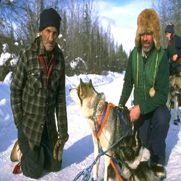
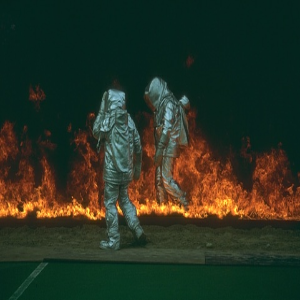
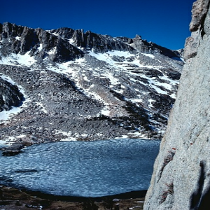
We prepare a dataset of test image paths that we will use for visual evaluation at the end of this example.
dataset = os.path.join(root_dir, "images")
test_path = os.path.join(dataset, "test")
test_img_paths = sorted(
[
os.path.join(test_path, fname)
for fname in os.listdir(test_path)
if fname.endswith(".jpg")
]
)
Crop and resize images
Let's process image data. First, we convert our images from the RGB color space to the YUV colour space.
For the input data (low-resolution images),
we crop the image, retrieve the y channel (luninance),
and resize it with the area method (use BICUBIC if you use PIL).
We only consider the luminance channel
in the YUV color space because humans are more sensitive to
luminance change.
For the target data (high-resolution images), we just crop the image
and retrieve the y channel.
# Use TF Ops to process.
def process_input(input, input_size, upscale_factor):
input = tf.image.rgb_to_yuv(input)
last_dimension_axis = len(input.shape) - 1
y, u, v = tf.split(input, 3, axis=last_dimension_axis)
return tf.image.resize(y, [input_size, input_size], method="area")
def process_target(input):
input = tf.image.rgb_to_yuv(input)
last_dimension_axis = len(input.shape) - 1
y, u, v = tf.split(input, 3, axis=last_dimension_axis)
return y
train_ds = train_ds.map(
lambda x: (process_input(x, input_size, upscale_factor), process_target(x))
)
train_ds = train_ds.prefetch(buffer_size=32)
valid_ds = valid_ds.map(
lambda x: (process_input(x, input_size, upscale_factor), process_target(x))
)
valid_ds = valid_ds.prefetch(buffer_size=32)
Let's take a look at the input and target data.
for batch in train_ds.take(1):
for img in batch[0]:
display(array_to_img(img))
for img in batch[1]:
display(array_to_img(img))
Build a model
Compared to the paper, we add one more layer and we use the relu activation function
instead of tanh.
It achieves better performance even though we train the model for fewer epochs.
class DepthToSpace(layers.Layer):
def __init__(self, block_size):
super().__init__()
self.block_size = block_size
def call(self, input):
batch, height, width, depth = ops.shape(input)
depth = depth // (self.block_size**2)
x = ops.reshape(
input, [batch, height, width, self.block_size, self.block_size, depth]
)
x = ops.transpose(x, [0, 1, 3, 2, 4, 5])
x = ops.reshape(
x, [batch, height * self.block_size, width * self.block_size, depth]
)
return x
def get_model(upscale_factor=3, channels=1):
conv_args = {
"activation": "relu",
"kernel_initializer": "orthogonal",
"padding": "same",
}
inputs = keras.Input(shape=(None, None, channels))
x = layers.Conv2D(64, 5, **conv_args)(inputs)
x = layers.Conv2D(64, 3, **conv_args)(x)
x = layers.Conv2D(32, 3, **conv_args)(x)
x = layers.Conv2D(channels * (upscale_factor**2), 3, **conv_args)(x)
outputs = DepthToSpace(upscale_factor)(x)
return keras.Model(inputs, outputs)
Define utility functions
We need to define several utility functions to monitor our results:
plot_resultsto plot an save an image.get_lowres_imageto convert an image to its low-resolution version.upscale_imageto turn a low-resolution image to a high-resolution version reconstructed by the model. In this function, we use theychannel from the YUV color space as input to the model and then combine the output with the other channels to obtain an RGB image.
import matplotlib.pyplot as plt
from mpl_toolkits.axes_grid1.inset_locator import zoomed_inset_axes
from mpl_toolkits.axes_grid1.inset_locator import mark_inset
import PIL
def plot_results(img, prefix, title):
"""Plot the result with zoom-in area."""
img_array = img_to_array(img)
img_array = img_array.astype("float32") / 255.0
# Create a new figure with a default 111 subplot.
fig, ax = plt.subplots()
im = ax.imshow(img_array[::-1], origin="lower")
plt.title(title)
# zoom-factor: 2.0, location: upper-left
axins = zoomed_inset_axes(ax, 2, loc=2)
axins.imshow(img_array[::-1], origin="lower")
# Specify the limits.
x1, x2, y1, y2 = 200, 300, 100, 200
# Apply the x-limits.
axins.set_xlim(x1, x2)
# Apply the y-limits.
axins.set_ylim(y1, y2)
plt.yticks(visible=False)
plt.xticks(visible=False)
# Make the line.
mark_inset(ax, axins, loc1=1, loc2=3, fc="none", ec="blue")
plt.savefig(str(prefix) + "-" + title + ".png")
plt.show()
def get_lowres_image(img, upscale_factor):
"""Return low-resolution image to use as model input."""
return img.resize(
(img.size[0] // upscale_factor, img.size[1] // upscale_factor),
PIL.Image.BICUBIC,
)
def upscale_image(model, img):
"""Predict the result based on input image and restore the image as RGB."""
ycbcr = img.convert("YCbCr")
y, cb, cr = ycbcr.split()
y = img_to_array(y)
y = y.astype("float32") / 255.0
input = np.expand_dims(y, axis=0)
out = model.predict(input)
out_img_y = out[0]
out_img_y *= 255.0
# Restore the image in RGB color space.
out_img_y = out_img_y.clip(0, 255)
out_img_y = out_img_y.reshape((np.shape(out_img_y)[0], np.shape(out_img_y)[1]))
out_img_y = PIL.Image.fromarray(np.uint8(out_img_y), mode="L")
out_img_cb = cb.resize(out_img_y.size, PIL.Image.BICUBIC)
out_img_cr = cr.resize(out_img_y.size, PIL.Image.BICUBIC)
out_img = PIL.Image.merge("YCbCr", (out_img_y, out_img_cb, out_img_cr)).convert(
"RGB"
)
return out_img
Define callbacks to monitor training
The ESPCNCallback object will compute and display
the PSNR metric.
This is the main metric we use to evaluate super-resolution performance.
class ESPCNCallback(keras.callbacks.Callback):
def __init__(self):
super().__init__()
self.test_img = get_lowres_image(load_img(test_img_paths[0]), upscale_factor)
# Store PSNR value in each epoch.
def on_epoch_begin(self, epoch, logs=None):
self.psnr = []
def on_epoch_end(self, epoch, logs=None):
print("Mean PSNR for epoch: %.2f" % (np.mean(self.psnr)))
if epoch % 20 == 0:
prediction = upscale_image(self.model, self.test_img)
plot_results(prediction, "epoch-" + str(epoch), "prediction")
def on_test_batch_end(self, batch, logs=None):
self.psnr.append(10 * math.log10(1 / logs["loss"]))
Define ModelCheckpoint and EarlyStopping callbacks.
early_stopping_callback = keras.callbacks.EarlyStopping(monitor="loss", patience=10)
checkpoint_filepath = "/tmp/checkpoint.keras"
model_checkpoint_callback = keras.callbacks.ModelCheckpoint(
filepath=checkpoint_filepath,
save_weights_only=False,
monitor="loss",
mode="min",
save_best_only=True,
)
model = get_model(upscale_factor=upscale_factor, channels=1)
model.summary()
callbacks = [ESPCNCallback(), early_stopping_callback, model_checkpoint_callback]
loss_fn = keras.losses.MeanSquaredError()
optimizer = keras.optimizers.Adam(learning_rate=0.001)
Model: "functional_1"
┏━━━━━━━━━━━━━━━━━━━━━━━━━━━━━━━━━┳━━━━━━━━━━━━━━━━━━━━━━━━━━━┳━━━━━━━━━━━━┓ ┃ Layer (type) ┃ Output Shape ┃ Param # ┃ ┡━━━━━━━━━━━━━━━━━━━━━━━━━━━━━━━━━╇━━━━━━━━━━━━━━━━━━━━━━━━━━━╇━━━━━━━━━━━━┩ │ input_layer (InputLayer) │ (None, None, None, 1) │ 0 │ ├─────────────────────────────────┼───────────────────────────┼────────────┤ │ conv2d (Conv2D) │ (None, None, None, 64) │ 1,664 │ ├─────────────────────────────────┼───────────────────────────┼────────────┤ │ conv2d_1 (Conv2D) │ (None, None, None, 64) │ 36,928 │ ├─────────────────────────────────┼───────────────────────────┼────────────┤ │ conv2d_2 (Conv2D) │ (None, None, None, 32) │ 18,464 │ ├─────────────────────────────────┼───────────────────────────┼────────────┤ │ conv2d_3 (Conv2D) │ (None, None, None, 9) │ 2,601 │ ├─────────────────────────────────┼───────────────────────────┼────────────┤ │ depth_to_space (DepthToSpace) │ (None, None, None, 1) │ 0 │ └─────────────────────────────────┴───────────────────────────┴────────────┘
Total params: 59,657 (233.04 KB)
Trainable params: 59,657 (233.04 KB)
Non-trainable params: 0 (0.00 B)
Train the model
epochs = 100
model.compile(
optimizer=optimizer,
loss=loss_fn,
)
model.fit(
train_ds, epochs=epochs, callbacks=callbacks, validation_data=valid_ds, verbose=2
)
# The model weights (that are considered the best) are loaded into the model.
model.load_weights(checkpoint_filepath)
Epoch 1/100
WARNING: All log messages before absl::InitializeLog() is called are written to STDERR
I0000 00:00:1699478222.454735 357563 device_compiler.h:186] Compiled cluster using XLA! This line is logged at most once for the lifetime of the process.
Mean PSNR for epoch: 22.51
1/1 ━━━━━━━━━━━━━━━━━━━━ 1s 684ms/step
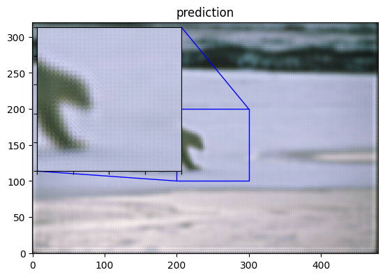
50/50 - 8s - 158ms/step - loss: 0.0284 - val_loss: 0.0057
Epoch 2/100
Mean PSNR for epoch: 24.82
50/50 - 1s - 11ms/step - loss: 0.0049 - val_loss: 0.0033
Epoch 3/100
Mean PSNR for epoch: 24.84
50/50 - 1s - 11ms/step - loss: 0.0034 - val_loss: 0.0031
Epoch 4/100
Mean PSNR for epoch: 25.44
50/50 - 1s - 11ms/step - loss: 0.0032 - val_loss: 0.0027
Epoch 5/100
Mean PSNR for epoch: 25.64
50/50 - 1s - 11ms/step - loss: 0.0030 - val_loss: 0.0027
Epoch 6/100
Mean PSNR for epoch: 26.20
50/50 - 1s - 11ms/step - loss: 0.0029 - val_loss: 0.0026
Epoch 7/100
Mean PSNR for epoch: 26.42
50/50 - 1s - 11ms/step - loss: 0.0028 - val_loss: 0.0025
Epoch 8/100
Mean PSNR for epoch: 26.58
50/50 - 1s - 11ms/step - loss: 0.0028 - val_loss: 0.0025
Epoch 9/100
Mean PSNR for epoch: 26.25
50/50 - 1s - 11ms/step - loss: 0.0028 - val_loss: 0.0024
Epoch 10/100
Mean PSNR for epoch: 26.25
50/50 - 1s - 11ms/step - loss: 0.0028 - val_loss: 0.0024
Epoch 11/100
Mean PSNR for epoch: 26.43
50/50 - 1s - 11ms/step - loss: 0.0028 - val_loss: 0.0024
Epoch 12/100
Mean PSNR for epoch: 26.43
50/50 - 1s - 11ms/step - loss: 0.0027 - val_loss: 0.0024
Epoch 13/100
Mean PSNR for epoch: 26.17
50/50 - 1s - 11ms/step - loss: 0.0027 - val_loss: 0.0024
Epoch 14/100
Mean PSNR for epoch: 26.45
50/50 - 1s - 11ms/step - loss: 0.0028 - val_loss: 0.0024
Epoch 15/100
Mean PSNR for epoch: 26.23
50/50 - 1s - 11ms/step - loss: 0.0028 - val_loss: 0.0024
Epoch 16/100
Mean PSNR for epoch: 26.40
50/50 - 1s - 11ms/step - loss: 0.0027 - val_loss: 0.0024
Epoch 17/100
Mean PSNR for epoch: 26.49
50/50 - 1s - 11ms/step - loss: 0.0027 - val_loss: 0.0024
Epoch 18/100
Mean PSNR for epoch: 26.17
50/50 - 1s - 11ms/step - loss: 0.0027 - val_loss: 0.0026
Epoch 19/100
Mean PSNR for epoch: 26.61
50/50 - 1s - 11ms/step - loss: 0.0028 - val_loss: 0.0023
Epoch 20/100
Mean PSNR for epoch: 26.38
50/50 - 1s - 11ms/step - loss: 0.0027 - val_loss: 0.0024
Epoch 21/100
Mean PSNR for epoch: 26.52
1/1 ━━━━━━━━━━━━━━━━━━━━ 0s 17ms/step
50/50 - 1s - 24ms/step - loss: 0.0026 - val_loss: 0.0023
Epoch 22/100
Mean PSNR for epoch: 26.46
50/50 - 1s - 11ms/step - loss: 0.0026 - val_loss: 0.0024
Epoch 23/100
Mean PSNR for epoch: 26.71
50/50 - 1s - 11ms/step - loss: 0.0026 - val_loss: 0.0023
Epoch 24/100
Mean PSNR for epoch: 26.20
50/50 - 1s - 11ms/step - loss: 0.0026 - val_loss: 0.0024
Epoch 25/100
Mean PSNR for epoch: 26.66
50/50 - 1s - 11ms/step - loss: 0.0027 - val_loss: 0.0024
Epoch 26/100
Mean PSNR for epoch: 26.41
50/50 - 1s - 10ms/step - loss: 0.0027 - val_loss: 0.0024
Epoch 27/100
Mean PSNR for epoch: 26.48
50/50 - 1s - 11ms/step - loss: 0.0026 - val_loss: 0.0025
Epoch 28/100
Mean PSNR for epoch: 26.27
50/50 - 1s - 10ms/step - loss: 0.0028 - val_loss: 0.0025
Epoch 29/100
Mean PSNR for epoch: 26.52
50/50 - 1s - 10ms/step - loss: 0.0026 - val_loss: 0.0023
Epoch 30/100
Mean PSNR for epoch: 26.62
50/50 - 1s - 11ms/step - loss: 0.0026 - val_loss: 0.0023
Epoch 31/100
Mean PSNR for epoch: 26.67
50/50 - 1s - 11ms/step - loss: 0.0026 - val_loss: 0.0023
Epoch 32/100
Mean PSNR for epoch: 26.57
50/50 - 1s - 11ms/step - loss: 0.0026 - val_loss: 0.0023
Epoch 33/100
Mean PSNR for epoch: 26.78
50/50 - 1s - 11ms/step - loss: 0.0026 - val_loss: 0.0024
Epoch 34/100
Mean PSNR for epoch: 26.02
50/50 - 1s - 12ms/step - loss: 0.0026 - val_loss: 0.0023
Epoch 35/100
Mean PSNR for epoch: 26.07
50/50 - 1s - 11ms/step - loss: 0.0027 - val_loss: 0.0025
Epoch 36/100
Mean PSNR for epoch: 26.49
50/50 - 1s - 11ms/step - loss: 0.0027 - val_loss: 0.0024
Epoch 37/100
Mean PSNR for epoch: 26.35
50/50 - 1s - 11ms/step - loss: 0.0026 - val_loss: 0.0022
Epoch 38/100
Mean PSNR for epoch: 26.92
50/50 - 1s - 11ms/step - loss: 0.0026 - val_loss: 0.0023
Epoch 39/100
Mean PSNR for epoch: 26.84
50/50 - 1s - 11ms/step - loss: 0.0026 - val_loss: 0.0023
Epoch 40/100
Mean PSNR for epoch: 26.08
50/50 - 1s - 11ms/step - loss: 0.0026 - val_loss: 0.0027
Epoch 41/100
Mean PSNR for epoch: 26.37
1/1 ━━━━━━━━━━━━━━━━━━━━ 0s 17ms/step
50/50 - 1s - 23ms/step - loss: 0.0026 - val_loss: 0.0023
Epoch 42/100
Mean PSNR for epoch: 26.17
50/50 - 1s - 10ms/step - loss: 0.0027 - val_loss: 0.0026
Epoch 43/100
Mean PSNR for epoch: 26.68
50/50 - 1s - 11ms/step - loss: 0.0028 - val_loss: 0.0023
Epoch 44/100
Mean PSNR for epoch: 26.34
50/50 - 1s - 11ms/step - loss: 0.0026 - val_loss: 0.0023
Epoch 45/100
Mean PSNR for epoch: 26.87
50/50 - 1s - 11ms/step - loss: 0.0026 - val_loss: 0.0023
Epoch 46/100
Mean PSNR for epoch: 26.73
50/50 - 1s - 11ms/step - loss: 0.0025 - val_loss: 0.0023
Epoch 47/100
Mean PSNR for epoch: 26.63
50/50 - 1s - 11ms/step - loss: 0.0025 - val_loss: 0.0023
Epoch 48/100
Mean PSNR for epoch: 26.79
50/50 - 1s - 11ms/step - loss: 0.0025 - val_loss: 0.0023
Epoch 49/100
Mean PSNR for epoch: 26.59
50/50 - 1s - 11ms/step - loss: 0.0025 - val_loss: 0.0022
Epoch 50/100
Mean PSNR for epoch: 27.11
50/50 - 1s - 10ms/step - loss: 0.0025 - val_loss: 0.0024
Epoch 51/100
Mean PSNR for epoch: 26.76
50/50 - 1s - 12ms/step - loss: 0.0025 - val_loss: 0.0022
Epoch 52/100
Mean PSNR for epoch: 26.41
50/50 - 1s - 11ms/step - loss: 0.0025 - val_loss: 0.0023
Epoch 53/100
Mean PSNR for epoch: 26.28
50/50 - 1s - 11ms/step - loss: 0.0025 - val_loss: 0.0022
Epoch 54/100
Mean PSNR for epoch: 27.25
50/50 - 1s - 11ms/step - loss: 0.0025 - val_loss: 0.0023
Epoch 55/100
Mean PSNR for epoch: 26.41
50/50 - 1s - 11ms/step - loss: 0.0026 - val_loss: 0.0023
Epoch 56/100
Mean PSNR for epoch: 26.64
50/50 - 1s - 12ms/step - loss: 0.0025 - val_loss: 0.0023
Epoch 57/100
Mean PSNR for epoch: 26.66
50/50 - 1s - 11ms/step - loss: 0.0025 - val_loss: 0.0023
Epoch 58/100
Mean PSNR for epoch: 26.72
50/50 - 1s - 11ms/step - loss: 0.0025 - val_loss: 0.0022
Epoch 59/100
Mean PSNR for epoch: 26.66
50/50 - 1s - 11ms/step - loss: 0.0025 - val_loss: 0.0023
Epoch 60/100
Mean PSNR for epoch: 26.55
50/50 - 1s - 11ms/step - loss: 0.0025 - val_loss: 0.0022
Epoch 61/100
Mean PSNR for epoch: 26.52
1/1 ━━━━━━━━━━━━━━━━━━━━ 0s 18ms/step
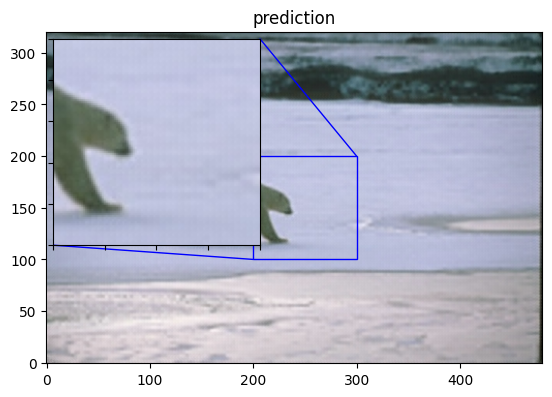
50/50 - 1s - 23ms/step - loss: 0.0027 - val_loss: 0.0023
Epoch 62/100
Mean PSNR for epoch: 26.16
50/50 - 1s - 11ms/step - loss: 0.0027 - val_loss: 0.0023
Epoch 63/100
Mean PSNR for epoch: 26.66
50/50 - 1s - 11ms/step - loss: 0.0025 - val_loss: 0.0022
Epoch 64/100
Mean PSNR for epoch: 26.61
50/50 - 1s - 11ms/step - loss: 0.0025 - val_loss: 0.0023
Epoch 65/100
Mean PSNR for epoch: 26.97
50/50 - 1s - 11ms/step - loss: 0.0025 - val_loss: 0.0023
Epoch 66/100
Mean PSNR for epoch: 27.02
50/50 - 1s - 11ms/step - loss: 0.0025 - val_loss: 0.0022
Epoch 67/100
Mean PSNR for epoch: 26.79
50/50 - 1s - 11ms/step - loss: 0.0025 - val_loss: 0.0022
Epoch 68/100
Mean PSNR for epoch: 26.59
50/50 - 1s - 11ms/step - loss: 0.0025 - val_loss: 0.0023
Epoch 69/100
Mean PSNR for epoch: 26.69
50/50 - 1s - 11ms/step - loss: 0.0025 - val_loss: 0.0024
Epoch 70/100
Mean PSNR for epoch: 26.75
50/50 - 1s - 11ms/step - loss: 0.0025 - val_loss: 0.0023
Epoch 71/100
Mean PSNR for epoch: 26.79
50/50 - 1s - 11ms/step - loss: 0.0025 - val_loss: 0.0023
Epoch 72/100
Mean PSNR for epoch: 26.94
50/50 - 1s - 11ms/step - loss: 0.0025 - val_loss: 0.0022
Epoch 73/100
Mean PSNR for epoch: 26.66
50/50 - 1s - 11ms/step - loss: 0.0025 - val_loss: 0.0023
Epoch 74/100
Mean PSNR for epoch: 26.67
50/50 - 1s - 10ms/step - loss: 0.0025 - val_loss: 0.0022
Epoch 75/100
Mean PSNR for epoch: 26.97
50/50 - 1s - 11ms/step - loss: 0.0025 - val_loss: 0.0022
Epoch 76/100
Mean PSNR for epoch: 26.83
50/50 - 1s - 11ms/step - loss: 0.0025 - val_loss: 0.0023
Epoch 77/100
Mean PSNR for epoch: 26.09
50/50 - 1s - 11ms/step - loss: 0.0025 - val_loss: 0.0023
Epoch 78/100
Mean PSNR for epoch: 26.76
50/50 - 1s - 11ms/step - loss: 0.0025 - val_loss: 0.0022
Epoch 79/100
Mean PSNR for epoch: 26.82
50/50 - 1s - 11ms/step - loss: 0.0025 - val_loss: 0.0023
Epoch 80/100
Mean PSNR for epoch: 26.48
50/50 - 1s - 12ms/step - loss: 0.0025 - val_loss: 0.0022
Epoch 81/100
Mean PSNR for epoch: 26.49
1/1 ━━━━━━━━━━━━━━━━━━━━ 0s 17ms/step
50/50 - 1s - 23ms/step - loss: 0.0025 - val_loss: 0.0022
Epoch 82/100
Mean PSNR for epoch: 26.49
50/50 - 1s - 11ms/step - loss: 0.0025 - val_loss: 0.0023
Epoch 83/100
Mean PSNR for epoch: 26.68
50/50 - 1s - 11ms/step - loss: 0.0026 - val_loss: 0.0024
Epoch 84/100
Mean PSNR for epoch: 26.75
50/50 - 1s - 11ms/step - loss: 0.0026 - val_loss: 0.0023
Epoch 85/100
Mean PSNR for epoch: 26.52
50/50 - 1s - 11ms/step - loss: 0.0025 - val_loss: 0.0022
Epoch 86/100
Mean PSNR for epoch: 26.92
50/50 - 1s - 11ms/step - loss: 0.0025 - val_loss: 0.0023
Epoch 87/100
Mean PSNR for epoch: 26.57
50/50 - 1s - 11ms/step - loss: 0.0025 - val_loss: 0.0022
Epoch 88/100
Mean PSNR for epoch: 26.96
50/50 - 1s - 11ms/step - loss: 0.0025 - val_loss: 0.0022
Epoch 89/100
Mean PSNR for epoch: 26.82
50/50 - 1s - 11ms/step - loss: 0.0025 - val_loss: 0.0022
Epoch 90/100
Mean PSNR for epoch: 26.54
50/50 - 1s - 11ms/step - loss: 0.0025 - val_loss: 0.0023
Epoch 91/100
Mean PSNR for epoch: 26.48
50/50 - 1s - 11ms/step - loss: 0.0025 - val_loss: 0.0022
Epoch 92/100
Mean PSNR for epoch: 26.36
50/50 - 1s - 11ms/step - loss: 0.0025 - val_loss: 0.0022
Epoch 93/100
Mean PSNR for epoch: 26.81
50/50 - 1s - 11ms/step - loss: 0.0025 - val_loss: 0.0022
Epoch 94/100
Mean PSNR for epoch: 26.66
50/50 - 1s - 11ms/step - loss: 0.0025 - val_loss: 0.0022
Epoch 95/100
Mean PSNR for epoch: 26.87
50/50 - 1s - 11ms/step - loss: 0.0025 - val_loss: 0.0023
Epoch 96/100
Mean PSNR for epoch: 26.43
50/50 - 1s - 10ms/step - loss: 0.0025 - val_loss: 0.0022
Epoch 97/100
Mean PSNR for epoch: 26.52
50/50 - 1s - 10ms/step - loss: 0.0026 - val_loss: 0.0023
Epoch 98/100
Mean PSNR for epoch: 26.57
50/50 - 1s - 11ms/step - loss: 0.0025 - val_loss: 0.0023
Epoch 99/100
Mean PSNR for epoch: 26.33
50/50 - 1s - 12ms/step - loss: 0.0025 - val_loss: 0.0022
Epoch 100/100
Mean PSNR for epoch: 26.50
50/50 - 1s - 13ms/step - loss: 0.0025 - val_loss: 0.0022
Run model prediction and plot the results
Let's compute the reconstructed version of a few images and save the results.
total_bicubic_psnr = 0.0
total_test_psnr = 0.0
for index, test_img_path in enumerate(test_img_paths[50:60]):
img = load_img(test_img_path)
lowres_input = get_lowres_image(img, upscale_factor)
w = lowres_input.size[0] * upscale_factor
h = lowres_input.size[1] * upscale_factor
highres_img = img.resize((w, h))
prediction = upscale_image(model, lowres_input)
lowres_img = lowres_input.resize((w, h))
lowres_img_arr = img_to_array(lowres_img)
highres_img_arr = img_to_array(highres_img)
predict_img_arr = img_to_array(prediction)
bicubic_psnr = tf.image.psnr(lowres_img_arr, highres_img_arr, max_val=255)
test_psnr = tf.image.psnr(predict_img_arr, highres_img_arr, max_val=255)
total_bicubic_psnr += bicubic_psnr
total_test_psnr += test_psnr
print(
"PSNR of low resolution image and high resolution image is %.4f" % bicubic_psnr
)
print("PSNR of predict and high resolution is %.4f" % test_psnr)
plot_results(lowres_img, index, "lowres")
plot_results(highres_img, index, "highres")
plot_results(prediction, index, "prediction")
print("Avg. PSNR of lowres images is %.4f" % (total_bicubic_psnr / 10))
print("Avg. PSNR of reconstructions is %.4f" % (total_test_psnr / 10))
1/1 ━━━━━━━━━━━━━━━━━━━━ 0s 19ms/step
PSNR of low resolution image and high resolution image is 30.0157
PSNR of predict and high resolution is 30.5336
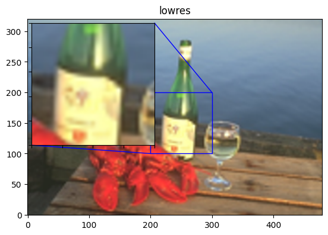
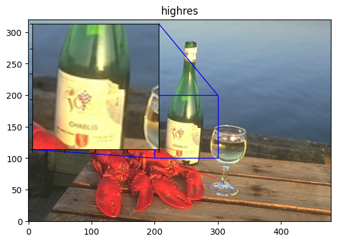
1/1 ━━━━━━━━━━━━━━━━━━━━ 0s 17ms/step
PSNR of low resolution image and high resolution image is 25.1103
PSNR of predict and high resolution is 26.0954
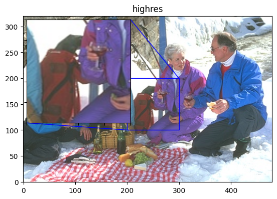
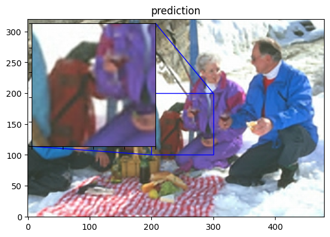
1/1 ━━━━━━━━━━━━━━━━━━━━ 1s 693ms/step
PSNR of low resolution image and high resolution image is 27.7789
PSNR of predict and high resolution is 28.3920
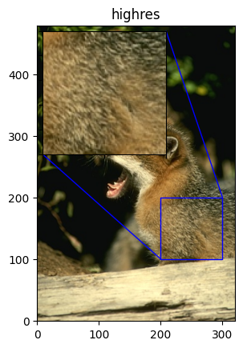
1/1 ━━━━━━━━━━━━━━━━━━━━ 0s 18ms/step
PSNR of low resolution image and high resolution image is 28.0321
PSNR of predict and high resolution is 28.2747
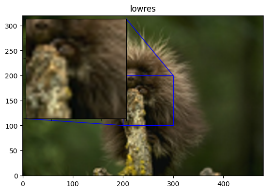
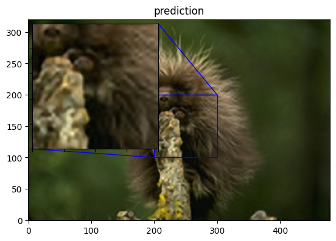
1/1 ━━━━━━━━━━━━━━━━━━━━ 0s 18ms/step
PSNR of low resolution image and high resolution image is 25.7853
PSNR of predict and high resolution is 26.3532
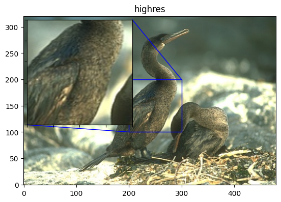
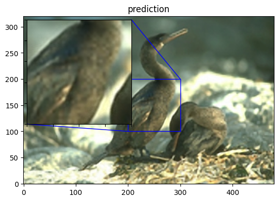
1/1 ━━━━━━━━━━━━━━━━━━━━ 0s 17ms/step
PSNR of low resolution image and high resolution image is 25.9181
PSNR of predict and high resolution is 26.7292
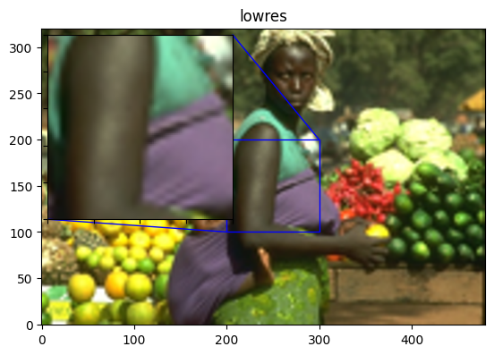
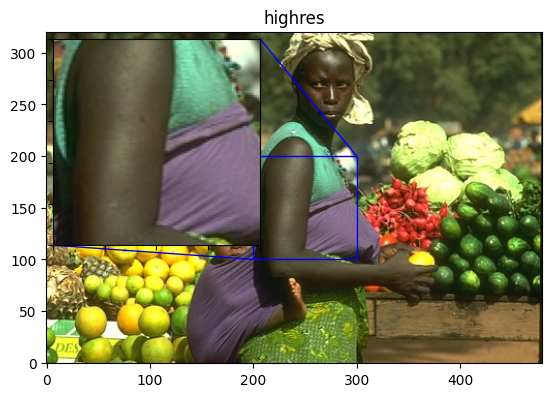
1/1 ━━━━━━━━━━━━━━━━━━━━ 0s 17ms/step
PSNR of low resolution image and high resolution image is 26.2389
PSNR of predict and high resolution is 27.1362
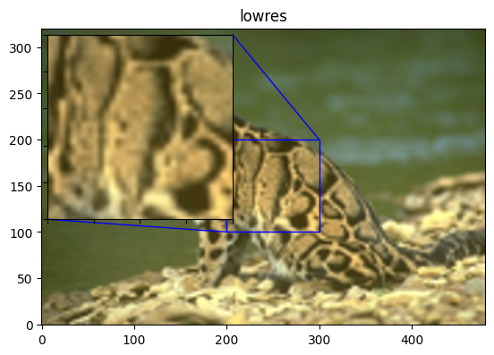
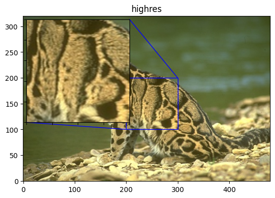
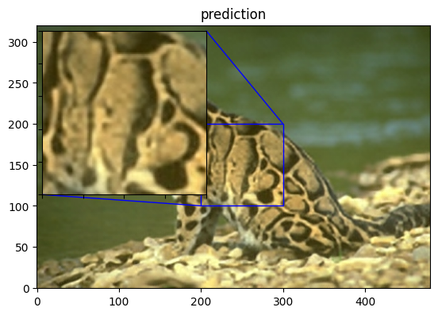
1/1 ━━━━━━━━━━━━━━━━━━━━ 0s 17ms/step
PSNR of low resolution image and high resolution image is 23.3281
PSNR of predict and high resolution is 24.6649
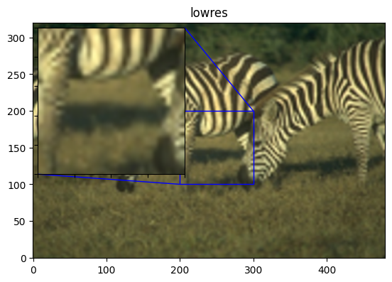
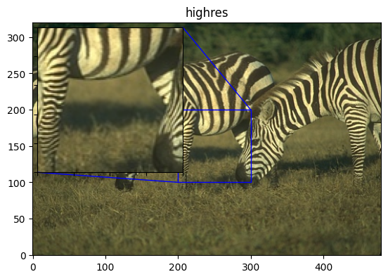
1/1 ━━━━━━━━━━━━━━━━━━━━ 0s 17ms/step
PSNR of low resolution image and high resolution image is 29.9008
PSNR of predict and high resolution is 30.0894
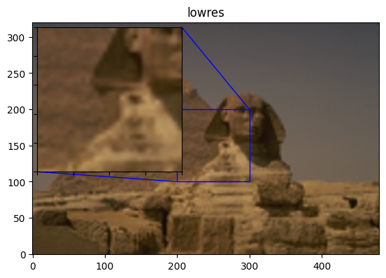